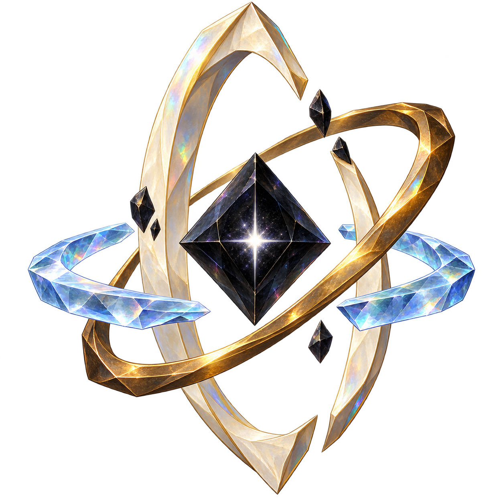

LIGHT / ASCENSION / WONDER
神圣降临。
所有品质均为单段揭示，物品与品质背景一次登场。
01 / 日冕加冕GRADE 7 → EX

超维孤品
无尽之心
THE DIVINE ASCENDS
超维 · 加冕
点击画面 · 圣光收束
W / DIVINE STUDIES光团对比 参考方向的本地试作 · 非原作素材
原版：柔光光团，作为比较基准。
查看原作参考 ↗深绯变体 固定原版颜色与样式 · 比较各色占比
基准：深绯红、浓红与收敛的金橙
背景对比
0.00 s
单段揭示 · 一次登场EX · 同时展开符文光环
单段揭示对比
动效参考与来源
爆散与流场结构参考 Codrops · Exploding Particles、Codrops · Dreamy Particles。极坐标旋流参考 Moonjump · Portal Vortex。泛光直接采用 Three.js UnrealBloomPass（MIT）；本页将这些技术重新编排为物品揭示动画。